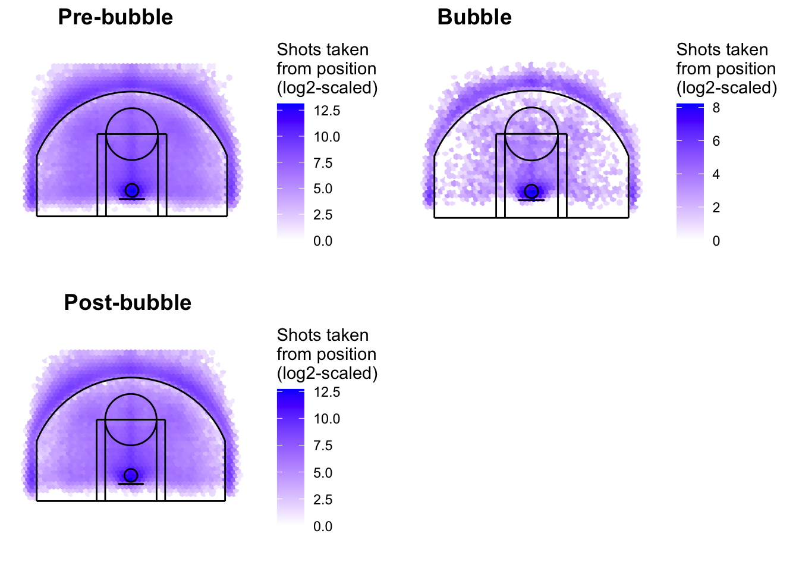

Chapter 3 Data
3.1 Sources
Talk about getting from espn: We got data from ESPN. For part of our data, I went to scrape the data and get it from ESPN. Because of this, we were able to get a bunch of tables from different years and teams. We needed to make sure that webscraping the data from the site is legal and ethical. That is why we didn’t edit any of the numbers and made sure the data was in the correct format. After using a library called Rvest, I was able to grab both western and eastern conferences as a table. Then, I repeated doing this for multiple seasons in order to get data for all teams and growth across the years. Some of the problems with the table was that it wasn’t in order like the ESPN by position. The table wasn’t combined and there wasn’t indicators for years or conferences. The teams also were in a format that wouldn’t be able to be grouped in a graph. For example, the team was like “Milwakee Bucksz” which is different than the team name because it had the letter or position combined. This took some cleaning and transformation, which will get talked about below. There were about 90 records considering 3 seasons and 30 NBA teams. Some of the variables are team name, team name adjusted- which is a clean abbreviated name for team, conference type- western or eastern, year- when season started, and more. Some of the numerical variables dealt with points per game, opponent points per game, wins, and losses.
3.2 Cleaning / transformation
Cleaning is done in the results section with the code, talk about getting data in not useful form, changing data types, converting, adding columns, binding into one table, adding variable for year and divisions
3.3 Missing value analysis
Here is one of the tables for the seasonal data. The seasons data has no missing variable as you can see and no rows are missing. There is a complete case file for all the rows showing that there is no missing data or patterns. This is because when getting the ESPN data, it contains all of the statistics for the season and there is no missing data from the site. This is definitely one of the perks of getting data directly from the source itself.
